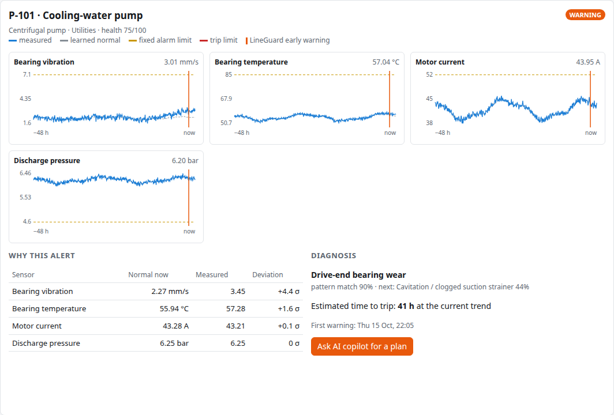
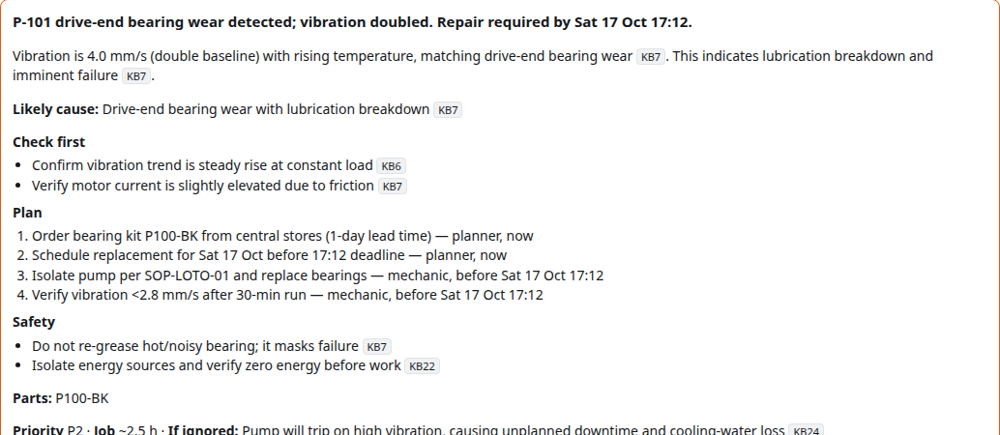
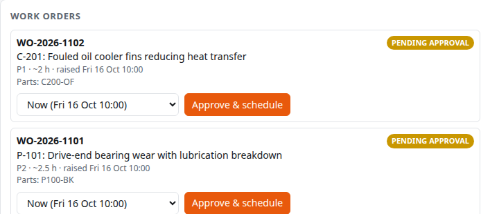
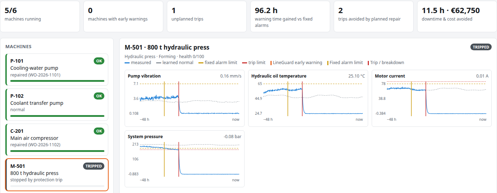

AMD Developer Hackathon Act III · Track 1: Intelligent Industry
Catch machine failures a day earlier.
Fix them in a planned stop.
Predictive maintenance copilot · AI running on AMD GPUs via AMD Token Factory
github.com/loaferct/act3 · Demo video: youtu.be/xU6mwf9w27s
The problem
~10 h
median warning a fixed alarm limit gave before the trip, across 149 developing faults
24 h
lead time for a pump bearing kit, in our example plant's maintenance manual
11 h
downtime when that pump then failed unplanned, from the example work-order history
The data is already there. The warning just arrives too late to order the part and plan the stop, so the repair happens during production.
LineGuard · AMD Developer Hackathon Act III
2
Who it is for
LineGuard answers both on one screen, in plain language, with sources.
LineGuard · AMD Developer Hackathon Act III
3
1 · See it early

For every sensor and every hour of the shift. The grey dotted line is the machine's own normal.
A deviation must hold for 15 minutes, so one-off sensor glitches never raise an alert.
Matches the fault (bearing wear, 97%) and fits the accelerating trend to the trip limit: "41 h to trip". Actual: 40 h.
LineGuard · AMD Developer Hackathon Act III
4
2 · Know what to do

Cites the plant's own manuals and incident history
Checks, part number, job time, safety steps and priority
Qwen3.8-Flash-Next on AMD Token Factory
Detection, time-to-trip and costs come from code. The model explains and plans; it never makes up the numbers.
LineGuard · AMD Developer Hackathon Act III
5
3 · Fix it in a planned stop


Same week, two outcomes: P-101 and C-201 were repaired in planned stops; the press nobody acted on broke down. Result: €62,750 and 11.5 h of downtime avoided.
LineGuard · AMD Developer Hackathon Act III
6
How it works
1
Vibration, temperature, current and pressure, every minute.
2
Flags persistent drift, names the fault, estimates time to trip. Plain, testable code.
3 · on AMD
Finds the right manual sections and past work orders, writes a cited plan.
4
A planner approves a slot. The repair happens in a planned stop.
Numbers come from code. The language model only explains and plans.
LineGuard · AMD Developer Hackathon Act III
7
Runs on AMD
| What | Measured in this project |
|---|---|
| Endpoint | AMD Token Factory, OpenAI-compatible API |
| Model | Qwen3.8-Flash-Next, open weights |
| Plan generation | 18–30 s per alert, about 20–25 tokens/s |
| Benchmark | 9 of 9 plans were valid and cited (Qwen3.8 and DeepSeek-V4) |
| In the demo | Instant: the plan starts in the background when an alert opens |
Point it at a vLLM server on an AMD Instinct MI300X, and sensor data and manuals can stay inside the plant.
LineGuard · AMD Developer Hackathon Act III
8
Results
33 h
median warning before the trip (fixed alarms: 10 h)
100%
of 149 developing faults warned before the trip
0
false alerts on healthy machines
€18.7k
downtime cost avoided per fault, and 3.1 h less downtime
Time-to-trip prediction one day ahead: within about ±15% of the real trip time (median 0.96×).
Plant data is simulated: physically motivated fault patterns, shift cycles, noise and sensor glitches, with exact ground truth. Real data is noisier, so expect some false alerts and tuning. Costs use the editable assumptions in lineguard/impact.py. Reproduce with: python -m scripts.evaluate --runs 50
LineGuard · AMD Developer Hackathon Act III
9
Trust and safety
Every claim cites a source. Citations the model can't back up are struck out.
Lockout/tagout is added to every hands-on plan, always.
Detection, time-to-trip and costs are computed by code, not by the model.
A person approves every work order and picks the slot.
If the AI is unreachable, a clearly labelled fallback keeps the screen working.
Tests cover detection, causality, diagnosis, the AI path and the work-order loop.
LineGuard · AMD Developer Hackathon Act III
10
Business value
LineGuard · AMD Developer Hackathon Act III
11
LineGuard
Code: github.com/loaferct/act3
Demo video: youtu.be/xU6mwf9w27s
AMD Developer Hackathon Act III · Track 1: Intelligent Industry